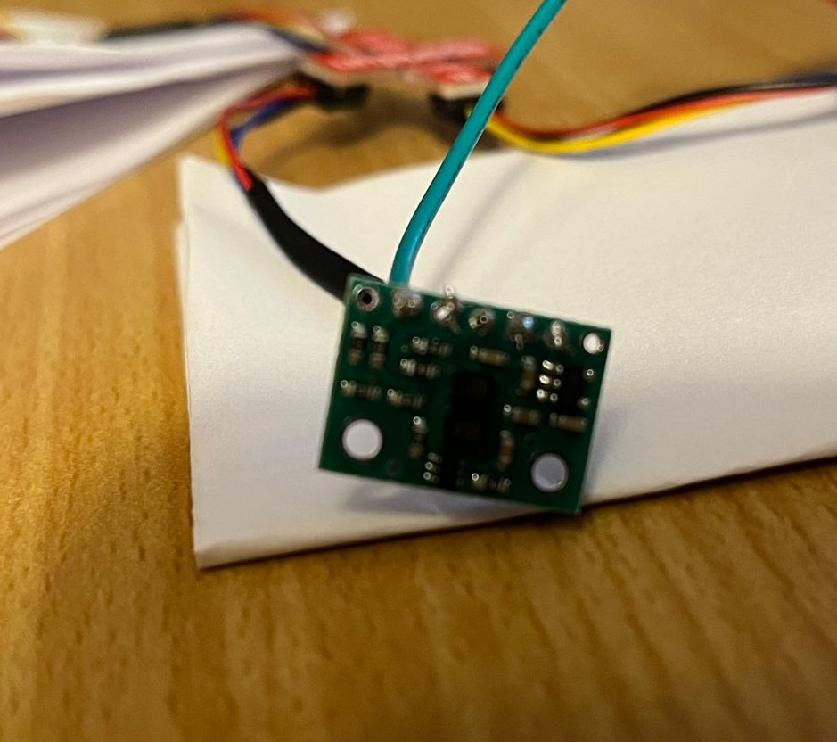
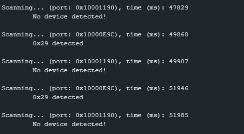
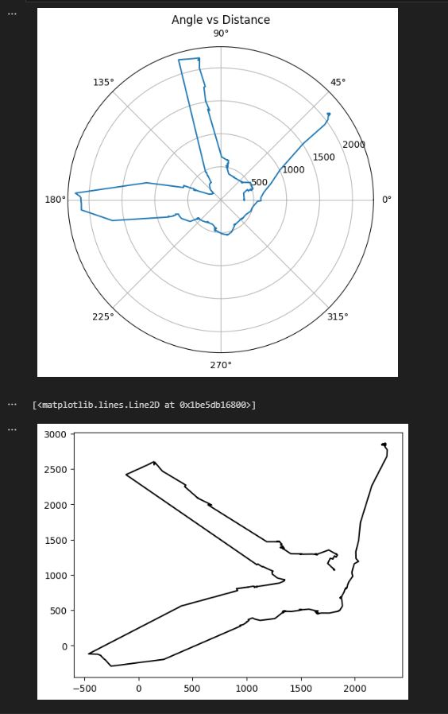

Hi everyone! I'm an Electrical Engineer with professional experience in C++. This is a 3 month long project I worked on with my teammates focused on building a self localizing robot using C++ and Python on Microcontrollers.
The first lab involves setting up of Sparkfun Artemis microcontroller by testing several sensors, built-in LED, microphone, and response on Serial monitor.
Pre Lab Procedures
We first installed Arduino IDE from this link. We then manually added the Sparkfun Arduino Artemis to IDE by following setup instruction defined on this link. This ensured that we have updated SpartFun Apollo3 board package installed on Arduino IDE. We then finally select RedBoard Artemis Nano as our board.
Tasks
Task 1 - Connecting Artemis
We now connect the Artemis to our computer via USB C cable. Initially there were no lights on the Artemis but that was because of a loose connection. I tightened the connections and it started working. To ensure that the laptop was indeed connected to Artemis, I selected COM3 which had Artemis connected indicated which meant were all set for the next tasks.
Task 2 - Blink up LED
The first task was to test if the Code is successfully uploaded on the Artemis and if the hardware connected to it was correctly operating. For this, we used a saved example called “BLINK IT UP”. I uploaded that code to Artemis and observed the functionality of the LED. The blue LED can be seen turning on for approximately 2 seconds and going off for 1 second continuously.
Task 3 - Serial Monitor Functionality
In this task, I executed Example 4 which was done to test if the serial monitor generated the correct output as per the logics in the code. Upon input the serial monitor was expected to print it. The image below shows the output which confirms the correctness of output on Serial Monitor.
Task 4 - Temperature Sensor
The fourth task involved testing if the temperature sensor was functional. For this, I compiled and uploaded code Example 4 which output the temperature in Degree Farheneit. To test correctness of variation in temperature detected by the sensor, I rubbed my hands together to warm them up and then placed my hand on the sensor. I noticed that the temperature increased from an average temperature of 74.5Degree F to 76 Degree F.
Task 5 - Microphone Test
In this test, we simply uploaded the Microphone output code. An average frequency of 430 was recorded when the surroundings in the lab were relatively quiet. I then played a random sound on YouTube which increased the frequency and it also responded with a change in frequency when I spoke something.
>
Musical Tuner (Graduate Level)
For this task, I had to light up the LED if the microphone detected note A sound. I did this by setting the voltage to HIGH supplied to LED when the frequency detected was between 430Hz and 450Hz because the note A has 440Hz frequency. The task was successful and can be demonstrated below:
>
Lab 2
The goal of this lab is to build a wireless connection between Artemis and another computer that will be used to send commands to the Artemis to control the robot. We will do this using Bluetooth by using Python to ensure data transmission via Bluetooth for future labs.
Pre Lab Procedures
Since I have Windows 10 on my laptop, the set up was fairly straightforward. I created a virtual environment for FastRobots_ble which created a directory for the same. Following this, I installed some packages for the tasks and unzipped the codebase in the directory we created. Now I’m set to code in Python on the virtual environment. I then installed AruinoBLE from the library manager in IDE and generated MAC address using a sample code called ble_arduino to extract the device MAC Address. For this, the serial baud rate was set at 115200.
Connecting Artemis via Bluetooth
To establish connection, I added the Artemis MAC Address and a unique UUID in the connections.yaml file to ensure that the connection to established to my Artemis since multiple controllers tend to share the same MAC Address. This is of utmost importance to ensure that the connection is established with the correct Artemis device and Bluetooth. We also changed the UUID in Aruino IDE ble_arduino code.
Task 1
ECHO
In this task, we simply had to use the ECHO command to ensure the connection via Bluetooth. In this, we sent a string data type to the Artemis and it was supposed to send the same string with the prompt ‘Robot Says ’. For this, we modified the ECHO command in IDE to send the string back. The following modifications were made:
We now connect the Artemis to our computer via USB C cable. Initially there were no lights on the Artemis but that was because of a loose connection. I tightened the connections and it started working. To ensure that the laptop was indeed connected to Artemis, I selected COM3 which had Artemis connected indicated which meant were all set for the next tasks.
task 2
GET_TIME_MILLIS
In this task, I created a new command called ‘GET_TIME_MILLIS which simply returns to the Computer the current time value in milliseconds using millis() built-in function. The data type was kept ‘double’. The command was added to the cmd_types.py file and to the ble_arduino file in IDE.
The result of this command as received from Artemis is shown below:
Task 3
Notification Handler
Previously, we had to separately send a command and then receive it. However, in this task we create a function that is able to receive the data without having to manually receive the data. This function is created for use in the upcoming labs where we are required to receive the output without having to call it manually.
Task 4
Time Loop
In this task, we generate current time values in the Artemis and get it sent to our laptop. We run this loop for 5 seconds by getting the current time using millis() function. We see that a total of 73 values are sent to the laptop in 5 seconds which tells us that the data sent is double data type which is 8 bytes. This indicates that 14.6Bytes/second are generated using the loop process.
Task 5
GET_TIME_DATA
Contrary to the previous task, we now store the timestamp values in an array and send it to our laptop. For this, I created an array of 1000 elements that iteratively stored time value in its index. ARRAY_LOOP command was made to store the values in the array and SEND_TIME_DATA was made to send the string in each position. The SEND_TIME_DATA loops through the data and sends each datapoint as a string to my laptop as shown below.
Task 6
GET_TEMP_READINGS
In task 6, I made a command called 'GET_TEMP_AND_TIME' which stores time and temperature values in two separate arrays. Then we use command 'GET_TEMP_READINGS' that merges the two array values at the same index and sends it over to this computer. From here, the notification handler function parses the data and stores in two separate lists and then simply prints out the two lists index by index. The image below shows the output.
Task 7
Comparison of Loop & Arrays
First method: send a timestamp value to my computer from Artemis one by one through a loop that runs for 5 seconds. This process generates a timestamp value in each iteration of the loop and sends it over. Second method: store timestamp values in an array of size 1000 at once and then send those values to my computer via bluetooth. In the first method, the while loop runs for 5 seconds and produces 73 values of timestamp in double data type. This gives a frequency of 14.6Hz (record 14.6 values per second). In the second method, we changed the array size and it stores 500 values of double timestamp and the time taken is 0.011 seconds. This gives a frequency of 45KHz (45,000 values recorded per second). This goes on to show that the array method of recording values in substantially faster than the looping method. The Artemis has 384KB of RAM. If we're recording values in double data type, they have a size of 8 bytes. Therefore, a total of 48,000 double values before the memoory runs out.
Task 8
Effective Data Rate and Overhead
Test: We sent data as multiples of character 'a' which is 1 byte. We sent and received data in multiples of 5 with an interval of 5 starting from 5 to 120. We recorded the time taken for the data to be sent and received and evaluated the data rate for each data that we sent. Overhead is a combination of excess computation time, and here we see that as the number of bytes being sent increases, the data rate also increases. At 5 bytes sent, the data rate is 17.94 bytes/second whereas at 120 bytes sent, the data rate is 248.97 bytes/second. This means that the overhead problem tends to reduce with increasing replies size. However, we noticed dips at 65, 75, 105, 110, 115, and 120 bytes being sent. This shows that as the data size becomes too big (i.e > 100 bytes), the data rate takes a dip and reduces.
Task 9
Reliability
I created command 'GET_TIME_AND_TEMP_COMB' which sends the combined values by merging the two arrays we created. We try to inspect here if the data generated in serial monitor on IDE matches the data sent to the computer via bluetooth. We see that all the data values are correctly transmitted and there are no missing values observed. Hence we can say that teh transmission of data via bluetooth is reliable.
Lab 3
The primary objective of this lab is to integrate Inertial Measurement Unit (IMU) to the Artemis to use it for orientation and movement of the robot in the future labs. We start off by extracting and processing values from the Accelerometer and Gyroscope and minimize any random noise that is retrieved.
Prelab & IMU SETUP
Before starting the lab, I thoroughly studied the IMU properties and functionality as written in its datasheet. I connected the IMU to the Artemis and to extract raw values, I used the basic Example 1 that was given in the ICM 20948 library in the Arduino IDE that I initially installed.
When I ran this code, I got the error of initialization of the sensor. For this, we saw that the AD0_VAL was set 1 which is the last bit of the I2C address. However the value becomes 0 when ADR jumper is closed. Therefore, to maintain correct address, we changed it to 0 which correctly initialized the sensor.
We now move on to performing tasks pertaining to Accelerometer and Gyroscope. Before starting, we light up the LED on startup to ensure that the Artemis is correctly connected and functioning.
ACCELEROMETER
The Accelerometer as mentioned in the datasheet returns raw values in radians so we had to convert it to degrees. For that we imported the math.h library. To calculate the tilt and roll values we use inverse tangent function using acceleration raw values from the Acccelerometer. Using this formula, we calculated pitch and roll.
We now test out the correctness of the measured and calculated values by tilting and rolling the IMU from -90 to 90 degrees. The command we created to get the roll and tilt from the IMU and the output are shown below.
We now connect the Artemis to our computer via USB C cable. Initially there were no lights on the Artemis but that was because of a loose connection. I tightened the connections and it started working. To ensure that the laptop was indeed connected to Artemis, I selected COM3 which had Artemis connected indicated which meant were all set for the next tasks.
The does not require two-point calibration since the values generated are as expected in the plotter. As shown in the result below. A bit of deviation can be noticed but that is primarily because of the limitation of having to align the IMU at an angle and take a screen shot of the serial plotter simultaneously. We see that there’s noise in the IMU readings for both tilt and roll so we basically now inspect the signal in frequency domain to understand the noisy signals.
FOURIER TRANSFORM & LOW PASS FILTERING
By splitting out data into time, tilt, and roll arrays, we observe the Fourier response of the signal. The following computations are made to determine Time period, frequency, and fourier transform of the signal. We generate a new sample with a 30ms delay.
We see that the sampling rate is 31.26 samples per second. The time period we get is 0.032. Using this separately both for roll and tilt samples, we observe the signals in time domain Fourier spectrums of both as shown below.
We see that there is a higher amplitude at frequencies below 4Hz by observing fourier of both tilt and roll. We then select 4Hz as the cut off frequency. The calculations below show how we compute RC and eventually the value of alpha to design a low pass filter to reduce noisy random signals with high frequencies.
Now we apply the Low pass filter by adding a new command that computes the LPF and sends it over Bluetooth along with the actual values from the accelerometer. The code snippet is shown below.
We now observe the real time variation of tilt for both the filtered (red) and unfiltered (blue) values. We also observe in the first fourier that we get high frequency noise in the unfiltered samples. However, the spectrum below it shows that the amplitude of frequencies above 4Hz have significantly gone down and shows that the noise has been reduced. Refer to the graphs below.
GYROSCOPE
Now we use the angular speed retrieved from the gyroscope to calculate tilt, roll, and yaw. Please note that the units returned as raw values from the gyroscope are in degrees per second so no conversion is required. We now apply the formulas mentioned below in our code to produce tild, roll, and yaw.
We now observe and compare the values from accelerometer and gyroscope by adding 15ms delay and executing serial print to observe values on serial plotter.
We see here that the same trend is followed by values generated from the gyroscope and aceelerometer. However, there’s a bias and this bias is increases as I increase the angular velocity of the IMU. This is observed with a 15ms delay and time taken to Serial.print the values. However, as faster sampling rate, the accuracy improved notably.
The videos above show that the values from the accelerometer may be more accurate but they are susceptible to noise hence the sharp spikes of variation. However, the values generated from the complementary filter absorbs the noise and is close to the trend of the values from accelerometer. This shows that the complementary filter indeed reduces noise and adjusts for any bias that we otherwise see in the values from the gyroscope.
SAMPLING DATA
The first test we do is to check the sampling rate of the IMU by removing any delays, Serial.print commands, or any other loops and checks like the isDataReady check. We simply create an array with values from the accelerometer stored in them and see if the values change or not. The hypothesis is that if the values change, it means the IMU updates its values faster than the main loop of the Artemis. The result below shows that the values generated by IMU are indeed different at each index of the array, thus proving that the IMU works faster than the Artemis.
Similar to Lab 1, we collected IMU data in arrays within the main loop within a flag to check if the values are 100. We can see that values differ which means the IMU updates its value before Artemis executes a new loop.
To sample data and send it via Bluetooth, we acquired values from the accelerometer and the gyroscope and stored each of the values in an array along with a time array. We note the time it takes to generate all this data and store them in the respective arrays.
Here we sent the arrays over via Bluetooth and observed that without any delays or print commands or any if else statements, the sampling rate is approximately 295 samples per second stored each array. This tells us that the sampling rate increases substantially by optimizing the code.
One big Array vs multiple arrays
One big array to store data can be beneficial since it creates simplicity if multiple variables are being tracaked. Moreover, the indexing and the retrieval of values using array indexing becomes easier and convenient. Moreover, one single variable that stores an array takes up less space in the memory compared to multiple variables of arrays. However, separate arrays in my experience creates a cleaner code with everything well defined and separated. I believe that in Robotics, there’s a need to boost sampling rate to acquire real time values from the sensors and also maximize the number of samples that can be stored without leading to an overflow to provide feedback to the robot for longer time. For this purpose, I believe one single array would be useful.
HOWEVER I DO THINK THAT WE CAN ALSO USE 2D ARRAYS that will boost both the efficiency and the clarity and ease of understanding but it requires more computing power. This can be explored in the future.
BEST DATA TYPE TO STORE DATA
The context in this question is primarily the data retrieved from sensors. This data is generally either numerical data or can be Boolean data. Although integer takes 4 bytes which is lesser than float or double and string takes up 2 bytes per character, they don’t serve the purpose here and if numbers with more decimal places are stored, integer will ignore them whereas strings will add up to the storage taken. Therefore, float is the right data type to store data in particularly in the context of storing sensor data because it gives the right level of precision (upto 6 or 7 d.p) and takes up 4 bytes for a wide range of values. This can be argued for different applications.
ARTEMIS MEMORY AND ARRAYS
Artemis has a memory of 384KB equaling 393,216 Bytes. If we have a sample frequency of 295Hz as we saw above and each value stored is a double data type of 8 bytes each, we can store 49,152 data samples. The time it would take will be the number of data elements divided by sampling rate which is 49,152/295 = 166 seconds before the Artemis runs out of memory.
5s worth of IMU data send over Bluetooth.
The sample data code above stores data in multiple arrays in a span of 5 seconds while the array size is 100. And then the python script on the left shows that the values are received via Bluetooth on the Computer. A total of 100 values were sent in each array in 339ms.
STUNTS!!
Our car is finally in action! Although it doesn’t have sensors and Artemis attached to it but the car was tested by steering in both directions, varying the speed, and also spinning upside down. The remote-control interfacing with the Robot Car needs some practice. Nevertheless, I’ve practiced thoroughly on how to move the robot as per our requirement in different axes. I observed that the initial torque is very high and the braking is pretty weak. The steering and spinning works well.
Lab 4
The primary goal of this lab is to successfully connect and test two ToF sensors that will be used in the future labs. We will focus on assessing the reliability and accuracy of the two ToF sensors and also ensure simultaneous operation of the two sensors using I2C communication protocol and Qwiic breakout board.
Prelab
For future operations on the robot, we will use two ToF sensors gone by the code VL53L1X. The two sensors have the same address hard coded on the board (0x52). Therefore, to establish I2C communication via the SDA and SCL communication lines, we need to program an shutdown routine for one of the sensors and change the address of the other sensor. This will allow us to read the measurements from both sensors.
The placement of these sensors is very important considering the movement of the robot. The primary use of these sensors is obstacle avoidance. Now although it Is completely dependent on the map or path that we’re given to move the robot in, but one sensor has to be placed at the front of the robot. This will ensure that forward collision is avoided to protect from potential damage. The other sensor can be placed at the rear of the robot but we’ll have to consider the length of cables and placement of hardware which may limit the positioning of the second sensor. I believe, that placing the other sensor on the side of the robot (left side). This will give a better understanding of the surroundings. Moreover, if the sensors are placed at the front and back, they will not be of much utility since they both will assess objects in the same axes so it won’t tell much about the surroudings.
HARDWARE CONNECTIONS & SOLDERING:
The pins from the ToF sensors that are connected to power up and send data to the Artemis should be permanently soldered so that the data transmission is established at all times. However, the GPIO pin that shuts down the ToF sensor to allow I2C communication does not have to be permanently soldered since the pin may be required in the future for some other purpose. Moreover, the battery wires are soldered to the JST connector since the primary purpose of the battery is to power up the Artemis and the robot. However, I initially considered the charging aspect of the battery but the Professor explained that when the Artemis is connected to the laptop, it automatically charges the battery. Therefore, only the connections that have to serve a single purpose throughout the course were soldered. The others were kept detachable.


We now test if the sensor has successfully connected to Artemis and what address is allocated to the sensor. For this, we executed and uploaded an example code from Apollo3 examples; Example1_wire_I2C. The address as mentioned in the datasheet of the sensor should be (0x52). But the address that was output on the Serial monitor was (0x29). The two addresses have the same 7 bits except the last bit which is the read/write bit and since there isn’t read in the address, the address is (0x29) instead of (0x52). This code ignores the read/write bit to form the address hence outputs a different address.
ToF Sensor Modes
The Short Range mode has a higher accuracy since shorter range. Moreover, the response time is faster since the measurement range is shorter hence fast response. However, the limited range makes it applicable only in cases where the robotic movement is confined in a small space. The medium range has a little compromised accuracy compared to short range. However, it has considerably more range which is more than twice as that of Short range. I believe Medium Range would be more applicable in our domain. Long range has 4m range which means that the accuracy reduces further but not much compared to Medium range. However, the range is one-third more compared to Medium range.
Looking at the maze and maps used in previous year’s lab, I noticed that the sensor should be able to measure distances that are considerable given the size of a standard room. A standard room has a width of about 7.6m. Keeping this in mind, the Long range would be suitable as it measures with a range of 4m compared to 1.3m and 3m from the ShortRange and MediumRange modes. However, one downside of using this mode would be the slower response time and accuracy compared to short and medium range. However, the accuracy and response rate is not as considerable as the range factor of the LongRange hence we select the Long range mode.
MEASURED DISTANCE ACCURACY AND RELIABILITY
We now execute the example code to read distance in feet and feet from the sensor. Here, we run a few tests to compare the measured values with accurate expected values by fixing the sensor and moving an obstacle at different distances from it which is also being measured by a ruler. I tested the sensor with a juice box placed at 0.25ft, 0.5ft, 0.75ft, and 1ft with two light settings as shown below. I recorded 10 values for each distance and added a delay of 10 seconds so I can change the actual distance of the juice box.
The scatter plot shows that the measured values at these distance in lower light deviate a little more than the actual value compared to the values in better lighting. However, we need to keep in mind that the actual distance may also have a small parallax error due to apparatus setup. We see a there’s an average deviation of 16% being the most at a distance of 0.25. However at greater distances, the deviation is below 10%.
There are 10 values measured at each distance. We see that the points overlap which tells that the data is consistent and precise and it has good reliability.
There are 10 values measured at each distance. We see that the points overlap which tells that the data is consistent and precise and it has good reliability. The graph below shows the eviation in measured distances with and without light. The deviation is noticeable at lesser distances.
SIMULTANEOUSLY FUNCTIONING TWO SENSORS
As discussed earlier, both the sensors have the same address, hence, the values received from both may mix up. To differentiate which value comes from which sensor and to operate them simultaneously, we modify the code to change the address of sensor 2.
We switched off the second sensor by using the XSHUT PIN connected to GPIO pin 8 as initialized. We then change the address to (0x30) and turn off the XSHUT pin to turn on the sensor. Both the sensors now have different addresses and are generating different and correct measured values.
SENSOR VS ARTEMIS SPEED
In section 9, I wrote a code that executed the loop for 2000 times and records the number of times that the Sensors are ready and records the value. Out of 2000 iterations of the loop, sensor 1 is data ready for 71 times whereas sensor 2 is data ready for 82 times. This tells us that the speed of Artemis is much faster than the sensor. The loop runs for 2000 times in a total time of 18 seconds in which less than 100 values from the sensors are retrieved. The time between each loop is around 9ms. The current limiting factor is the condition check if the sensors are DataReady or not and the Serial.print commands. The Artemis is way faster than the sensor’s ability to send Data.
TIMe STAMPED TOF DATA OVER BLUETOOTH
I modified my code from Lab 2 particularly the ARRAY_LOOP AND ARRAY_CALL_LOOP commands. I stored 2000 values of timestamp and distance from each sensor in the arrays and sent it over via Bluetooth. The values were sent as strings and then parsed and stored in three different arrays. Here’s a video of how I varied the distance of the obstacle from the sensors and how it produced the measured values as shown in the graph below. I moved the objects back and forth infront of both the sensors simultaneously.
This is the set up for experiment to test the operation of both values that were sent via bluetooth.
INFRARED TRANSMISSION SENSORS
This is the set up for experiment to test the operation of both values that were sent via bluetooth.
Generally, Infrared Transmission based sensors are present both as active and passive sensors. Active sensors include ToF sensors and IR proximity sensors. These emit infrared light and record the time taken to receive the reflected light off the object/obstacle. This is how it calculates the distance from an object. These sensors produces precise measurements of distance since they emit the infrared light which is received back. It is used for obstacle avoidance, object detection, and distance measurement. But the problem related to active sensors like ToF is that they consume more power to emit light continuously which is why they tend to be more expensive due to required components.
Passive sensors simply rely on detecting infrared radiation emitted or reflected by the present objects. Their pro is the less requirement of power since they are not emitting light and hence have a lower cost due to simpler design. The problem with such sensors is that they are not able to provide precise distance measurements and may not provide direct distance measurements at all. They are also more vulnerable to environmental factors like temperature changes or ambient infrared radiation sources.
sensitivity to textures and colors
I fixed our TOF sensor and placed white and black object at the same distance from the sensor. I observed that the distance measurement in both the cases do not vary a lot. The minute variation is primarily because of the noise and environmental effects. Other than that, the sensor measures the same distance for both white and black objects. From the experiment we see that color or texture does not really impact the measured distance. This can be because ToF sensors emit infrared light pulses which is not susceptible to colors compared to visible light. Hence, they are less likely effected by changes in colors or textures. However, if any object with extreme reflective or absorbent surfaces are placed, then there may be a small deviation.
Lab 5
This lab extends our learning to usage of Motor Drivers by virtue of Pulse Width modulation to rotate the motor at the desired and variable speed. For this course, we use 2 dual motor drivers DRV8833 Motor driver carrier. The tasks in this lab aim to drive the two motors simultaneously in the desired direction and speed. In this lab, we simply explore open loop control system with the input signal from the Artemis.
Prelab
The motors require high amount current to generate sufficient torque to drive them on different terrains. For this, we ensure that we supply output to the motor from both the output channels on the motor driver. The motor driver consists of two channels which means two motors can be operated using one motor driver but to maximize the amount of current delivered to the motor we connect each motor to both channels of the driver. For this, we connect the Input pin A1 to B1 and A2 to B2 by soldering the wires accordingly as shown in the schematic below. The actual circuit images do not clearly show the connections, hence the schematic. We used the two channels on the same motor driver since the problem with alternative approach of using two channels from two separate drivers is the possible difference in signal generation of the two drivers.
Therefore, we hook each motor to each separate motor driver interconnecting the corresponding outut and input pins. The output pins A1 was connected to B1 and A2 connected to B2
To generate PWM signal, we use Artemis pins 12 and 13 to power one motor and A2 and A3 to power the other motor. For this, we first confirmed that the PWM enabled pins were being used by looking at the datasheet. These pins were primarily used because ToF shutdown pin was connected to pin 8 and I wanted to keep the other connections at a distance from that and from the other motor’s connections hence the selection just to avoid any short circuiting or undesired connections established.
We powered the Artemis and Motor driver (motors) with different batteries. The reason for this is that when the motors rotate, they may generate noise or spikes of voltage because the Motors we have are DC motors. These spikes can potentially damage the Artemis if it is connected to the same source. Also, to generate maximum power to the motors, we connect it to an entirely separate battery.
I selected the color codes to maintain consistency between different motors and different types of connections. For inputs I used green and yellow cables and for output I used separate colors for both the motors. The wire lengths but kept long enough so that any re connections are possible and not too cumbersome. However, they were not kept so long that it may increase the vulnerability of noise. Once the wires were soldered I checked the connections by twisting and turning the cables a bit. Solid-core cables were not used since they are more sensitive to vibration at high frequency when we operate the robot car at a higher speed.
CONNECTIONS AND PWM TESTING
I first unscrewed the robot’s shell and unhooked the microcontroller already installed and stripped the motor connection to be hooked to the motor driver. I removed the LED, button, and PCB as well.
I first tested one motor by making all the connections. I connected pin A2 and A3 to the input pins of the motor driver. Then the VIN and GND were hooked to a cable that will later be connected to the battery using the connecter given at the bottom of the robot. For now, these wires were connected to a DC power supply that maintained its voltage level at 3.7V for the purpose of testing. I established the Ground between motor driver and Artemis and then ensured to connect corresponding input pins of both channels to one another (A1 to B1 and A2 to B2) and similarly for the output pins. I then connected the motor to A1 and B2 because I wanted to maintain a distance between the two soldered motor wires in order to avoid any short circuiting when the circuits were placed on the robot.
I then programmed a basic code for the motor supplying an analog PWM signal of 90 where it goes up to 255 which means 100% duty cycle.
I first tested the input and the output signal using the oscilloscope in our lab. First by changing its scale and positioning, I observed a PWM signal that reflected a duty cycle of less than 50% as shown below:
The motor was tested by placing the robot on a box so that the motors are not in contact to any surface. The motor driver was connected to the white battery in the image above and the motor was tested. It worked fine however, I noticed a few spikes in the PWM signal generated by the Artemis.
I did the same for the other motor and it also gave a similar response. I now had to place the artemis, drivers, and sensors on the car in an efficient way.
I now confined the cables and placed the motor drivers and artemis in the front of the car where a depression was available in the chassis that gave ample space. The Artemis battery was also placed there. The Artemis orientation was kept to ensure that any external connections were made very easily in the future.
I set the PWM of the motors by giving analog signal of 30, 40, 60, and 70. The motors were unable to rotate while on the ground at PWM of 40. However, at a PWM of 50 it started moving but on surface with friction (my room wooden floor) it didn’t move but on the tiles of the lab it moved slowly. Therefore, I set the minimum PWM at 50 at which it starts moving forward (in a straight line).
After changing the PWM it steered correctly as shown below. The routine in the code makes the robot drive forward for 2 seconds then stop and steer to the right on its axes such that it steers 180 degree at a PWM of 200 and 230. This is the stunt we performed to confirm that robot is responding correctly.
Once the steering worked, I tested the capability of the motors to rotate at same speeds and stop at the same time. Initially as shown in the video below, at a PWM of 90, the two motors rotated at almost a similar speed but decelerated and stopped at different rates
This is why the robot steered to the right exactly when the motors decelerate and stop. To fix this, I operated the left motor at a PWM of 75 then 80 while keeping the other motor at 90. At a PWM of 80 for the left motor, I was able to move the robot in a straight like for around 6 feet distance.
All these demonstrations were done on different terrain to notice difference in behavior of the motors on them.
GRADUATE LEVEL 5000
Frequency from analogwrite
The Artemis default frequency for analogWrite is around 980Hz. The frequency of PWM signal indicates how fast the PWM signal is changing from HIGH to LOW. This does not directly affect the speed of the motor but improves control over the motor speed since the higher the frequency the faster the changes in voltage level of the PWM. The frequency affects the responsiveness of the motor. Therefore, the frequency generated by the Artemis shall be sufficient for the motors. If we manually configure the frequency of the PWM signal to be higher, it is likely to enhance the control of the motor and its responsiveness. Moreover, higher frequencies are less likely to produce noise which is good for the motor operation. Higher frequencies also reduce vibration in motors which allow for better path following by the robot and keep it accurate.
Minimum PWM
I started with a 0 PWM value for both the motors. The left motor on my robot didn’t start moving on the vinyl floor until it had a PWM of 30 whereas the right motor didn’t move until a PWM of 40. I increased the PWM for both motors with an interval of 5. However, this PWM was not enough to enable on-axis turns. Infact for on axis turns, friction and other factors like difference in speeds of both motors matter a lot hence, a PWM of 70 on left motor and 80 on the right motor enabled on axis turns of the robot.
To test the speed of the motor at at 30 and 35 PWM value to make it start moving. Then after a delay of 3000ms I reduced their speeds by an interval of 5 in every iteration. The motors completely stopped moving when I set the PWM values at 15 and 20. They continued to move at the slowest possible speed at a PWM of 25 (left) and 30 (right motor). Anything below that stopped the robot as it failed to overcome the friction and other forces.
Lab 6
This lab introduces us to application of PID control to vary the motor speed using duty cycle to avoid collision from an object in range. We test PI, PD, and PID controllers for this with variety of tuning settings to achieve the desired motion and behavior of the robot.
Prelab
For BLE Transmission, I made a case that accepted a string of 4 values from my laptop (jupyter notebook) and sparsed those 4 values and assigned to 4 variables kp_val, ki_val, kd_val, and distance from the object. Once these values are sparsed and assigned, the value of kp, ki, kd, and set point are set from these values and the PID is enabled.
The snippets below show the command and the python script that enables this.
The python script basically takes in values of these variables as strings and concatenates them with ‘|’ to make a string that can be sparsed by ide code. We keep changing these values to test out different PID behaviors. These values are sent as floats to the arduino.
This same case sets the pid_control flag to 1 which starts the PID loop in the void main loop for 2000 iterations in which the PID values are recorded in arrays. The next case called SEND_VALUES send the values are string to the laptop via Bluetooth and it is sparsed from python.
In this code, I also added a case HARD_STOP which stops the motor to rest and exits the PID loop that is being executed in the main loop.
Extrapolation
We noticed that when we ran the main loop 4000 times, only 4% loops generated actual values from the sensor meaning the sensor was ready to give the data, however, the rest loops calculated interpolated values. A total of 4000 loops were executed in 43,800 milli seconds with only 149 actual values generated by the sensor. This means the frequency of the sensor was 3.4Hz or 3.4 values per second whereas the frequency of the Artemis was 91Hz. Therefore, I wrote a chunk of code that interpolated the values.
My approach for interpolation was that before the loop started running, I stored a value from the sensor as the last value. As the loop ran, I stored the last and the second last value and its time stamp generated from the sensor and used those to calculate the interpolated value at the next time stamp until the next actual value was generated by the sensor which became the last value. The snippet below shows this:
This interpolation was tested by storing the values in the arrays and also storing a string in another array with values “Actual” and “interpolated” to use these to understand if the interpolation was correctly done. I tested the interpolation and it came out following the same trend as expected as demonstrated below where I compared the trend of actual and interpolated values against time. A little variation is seen since the timestamp at which actual and interpolated values are acquired are different.
Now that we use interpolated values to run our PID controller, the frequency of PID and sensor are decoupled. The PID is running at a frequency of 92Hz contrary to the small frequency of the sensor.
PID CONTROLLER
For the PID, I set the Kp value as a fraction of the max duty cycle that I want to supply to the motors and the maximum distance that sensor can measure. Hence the Kp value was set as 150/4000 since Long mode measures upto 4000mm distance from the sensor. I also tested the Kp values of 0.05, 0.07 but the response from at Kp of 0.037 was more suited in terms of responsiveness in front of an object. Following the process for PID control as shown below, we executed integrator and derivative and tuned the suited Ki and Kd values until we found the ideal ones.
The snippet below shows the computation of error difference and sum of error for the integrator and derivative module alongside proportional control:
The computations for total errors and error derivatives are used to find the derivative and integrator components of the PID. I set the Kp value of 0.037 as a benchmark for the Ki and Kd values and tested multiple values from the range of 0.001 to 0.009 and found the ideal values as mentioned below:
Since the benchmark was set at 150 duty cycle, any value above 150 was set at 150 and any value below -150 was set at -150.
I used the values extracted from BLE transmission to plot the duty cycle and the interpolated/actual distance at each time stamp. We can see a similar pattern in the variation in both duty cycle and distance from the object. We also see that for distance values over 4000, the duty cycle is clipped at 150.
The robot was finally tested with these values and the following behavior was observed. To ensure that it behaved correctly on different terrains I tested the robot on vinyl and carpeted terrains.
In the video on the vinyl, we see that the robot varies its speed based on distance from different objects in its path that were placed in the middle to ensure that the PID is correctly working. The other robot, wall, and response to the box confirm that that the robots PID works correctly also in the case when it gets too close to the object and reverse its direction.
WIND UP TASK GRADUATE LEVEL 5000
To ensure correct functionality of Integrator, I tested the integrator by keeping the robot at larger distances. The issue that happened as seen from the values was that the error became too large. This is mainly because I summed up all the errors and therefore, the effect of integrator bypassed the proportional controller completely. The robot had a large error accumulated and didn’t stop correctly. For this, I capped the total error to 2000 as shown the the code snippet below. This helped prevent the error sum to be accumulated to large value.
A value of 0.001 for the Ki was which correctly minimized the oscillation of the robot front and backwards when detecting an object.
Lab 7
This lab extends to implementation of PID control to achieve desired orientation or yaw of the robot. We do this by tuning values of PID factors using Bluetooth communication from our laptop to test out behavior at different values and further analyze the behavior by recording the data.
Prelab - BLE Set up
Just like the set up for PID in ToF sensor lab, I made a case that accepted a string of 4 values from my laptop (jupyter notebook) and sparsed those 4 values and assigned to 4 variables kp_val, ki_val, kd_val, and desired angle. Once these values are sparsed and assigned, the value of kp, ki, kd, and set point are set from these values and the PID is enabled.
The snippets below show the command and the python script that enables this.
The python script basically takes in values of these variables as strings and concatenates them with ‘|’ to make a string that can be sparsed by ide code. We keep changing these values to test out different PID behaviors. These values are sent as floats to the arduino.
This same case sets the pid_control flag to 1 which starts the PID loop in the void main loop for 2000 iterations in which the PID values are recorded in arrays. The next case called SEND_VALUES send the values are string to the laptop via Bluetooth and it is sparsed from python.
P Controller Implementation
In this lab, I implemented a PID controller for orientation control of the robot. As expected, the yaw at the start of PID is zero. The target here to test out PID control was to make the robot rotate and orient itself to the set point given to the robot.
To start off, I first determined the Proportional controller. The set points or desired angle I wanted the robot to orient to was 90 degrees and 135 degrees so I implemented PID controller for that and tuned the values. For the computation of PID and implementation the code below shows the methodology and it starts with an error signal that is basically the difference between the angle we want the robot to rotate to and the yaw of the robot at a given point. The components of PID are calculated and added to generate a duty cycle for the motors. The code below shows PID implementation:
First I implemented P controller for which the initial value I set was 0.15 and the intuition behind it was to give a PID value that is a proportion of the max deviation of 180 degree so I set a value of 0.15. However, at this value the robot does not exactly move to 135 degree angle and there is no overshoot recorded. The response can be seen in the graph below:.
I also added a condition within the PID code that if the last 15 values are less than 5% of the maximum deviation i.e less than 9 degrees then that means the robot can be stopped and the PID control can end. The implementation of PID and this logic is below along with the use of this condition:
I then increased the value to around 0.4 and the reason behind this was that I wanted to achieve a maximum duty cycle of 70 at a required angle of 180 degrees. The robot moved towards the desired angle really quickly and there was an offshoot that I observed.
PID Controller
I programmed the PID within the main loop and added the last 15 values condition to it too. All the values including P, I, D, Yaw, Error, and Time are recorded in arrays that will be sent later. The snippet below shows the code.
Now I also added the integrator and derivative component to PID. For the integrator, I varied the Ki value from 0.01-0.09. I received the optimum response at a value of 0.06 ki value. For the derivative component I varied kd from 0.01 to 0.09 and fixed a value of 0.07 for optimum response. The below shown responses are for yaw over time for the PID, error and duty cycle, and the separate P, I, and D components for a desired angle of 135 degrees.
The videos below show how the robot reacts at a desired set angle of 90, 135, and 180 degrees.
These videos show how the robot orients itself when an external force changes its orientation.
GRADUATE LEVEL 5000 - WINDUP
While I tested with PI controller for different desired angles like 90, 135, and 180 degrees, I noticed that the integral component increased substantially when the desired angles were large. This is likely to cause a drift because if the error remains positive then the sum of errors will keep increase and becoming more positive which will affect the proportional component. So for this, I added a wind up factor of 4 since the maximum duty achieved even by the proportional is 70, hence, capped the integral factor at 4 to reduce drift. The maximum duty cycle was also wound up at max duty cycle of 70 that was given apart from the base speed of 110 and 100 to right and left motors to cover up the offset between the two motors. The response is shown below.
These figures show te error and duty cycle response, I component and yaw output with time after WINDUP
Here I set the desired angle to 135 and observe the behavior with windup implemented
Lab 8
The objective of this lab is to analyze the physical factors surrounding the robot to estimate and predict its trajectory using Kalman Filters. In this lab, we will evaluate the drag and momentum of the robot and based on that, implement a Kalman filter that would predict its state.
Step 1: Estimating Drag and momentum
In order to determine the state of the robot, we have to compute the kinematics acting on the robot. The drag and momentum determine the equation of motions acting on the robot. For this we have to compute the drag and momentum on the robot which computes the A and B matrices of the Kalman Filter. To do this, I simply formulated a program that would drive the robot at a constant speed (constant duty cycle) towards a wall. I added a MOVE and STOP commands to start and hard stop the robot. The move command also had the functionality of supplying PWM of choice separately to both the motors. The snippet below shows the code to move the robot and the commands:
The duty cycle given was inspired from the previous lab where the maximum duty cycle given was 130 apart from the base speed. I want to remind that a base speed was given to the motors since a minimum PWM is required to move the motor on different terrains. Like the ToF PID lab where I kept the PWM at 140, I am keeping the PWM value at 130 in this lab.
After multiple iterations of moving the robot towards a wall, we observed the data to ensure that steady state was achieved. The data was sent over from the BLE to the computer by using SEND_VAL command as shown below
The data was processed and analyzed further. The velocity was determined and by observing the data and simply interpolating the values directly by observing the graph, I selected XXX as the as the stead state velocity which was at a 90% rise time.
To start off, I first determined the Proportional controller. The set points or desired angle I wanted the robot to orient to was 90 degrees and 135 degrees so I implemented PID controller for that and tuned the values. For the computation of PID and implementation the code below shows the methodology and it starts with an error signal that is basically the difference between the angle we want the robot to rotate to and the yaw of the robot at a given point. The components of PID are calculated and added to generate a duty cycle for the motors. The code below shows PID implementation:
I then saved this data in a csv file for future purposes.
To calculate the velocity at a particular timestamp, I used the previous and next value to compute the current velocity. For the 90% rise time steady state velocity, I got a velocity of 1770mm/s.
Step 2: Initialization of kalman Filter
To determine the velocity at 100% time, I averaged the last 3 velocity values since there was some randomness in it. Then, I interpolated and observed from graph that the closest value at 90% rise time was 1768mm/s. The closest recorded value to this was 1770mm/s which was determined as the 90% rise time velocity.
Using the formulas and concepts given below, I calculated drag and momentum.
Using this, I calculated drag and momentum. The calculation and methodology is given and explained below:
Following this, I had to discretize the A and B matrices. For this, I observed from my data that the average sample time was around 10milliseconds as shown below:
Therefore, I used 10 milliseconds as sampling rate and computed the Ad and Bd matrices as shown below and kept n equals to 2 since the order of state matrix is 2 i.e position and velocity.
Now we had to compute the process and measurement noise to determine the aggregate uncertainty of the system. For this, we first worked out the uncertainty in the sensor values. The uncertainty as observed in all labs pertaining to Time of flight sensors usage, we observed that the deviation can be around 30mm (particularly from lab 3) hence initializing the value of sigma 3 as 30. Since the state uncertainty depends highly on the uncertainty of the ToF sensor hence it is kept at 30 as well hence sigma 1 was set 3. Finally, sigma 2 is set at 0.2 since the velocity is initially 0 hence kept a low guessed value.
Now, we create covariance matrices for uncertainty to incorporate in Kalman filter. The snippet below shows computation of matrices.
We now apply the formulas below in code to create a function that predicts the next value of position using Kalman filter:
Step 3: Implementation and testing Kalman Filter
To start computation of our Kalman filter, we use the data from Time of flight PID control lab. The graph below shows the behavior of duty cycle and distance with time for the PID ToF data.
We now initialize our values to run the Kalman filter on the values recorded from the PID ToF data. Sigma is initialized as the initial sigma_u we computed above. For mu, since it is the predicted state, the initial value is kept as the first distance and velocity value from the data collected. For u since it’s the state input which is the duty cycle, it is set as duty cycle/max_duty which is 130.
To start computation of our Kalman filter, we use the data from Time of flight PID control lab. The graph below shows the behavior of duty cycle and distance with time for the PID ToF data.
We now run a loop for the length of the data that we have from previous lab and append new values of mu and sigma to input them into the next iteration or prediction of the next position of the robot. The snippet below shows this code to compute and appended values in 2 separate lists.
To start computation of our Kalman filter, we use the data from Time of flight PID control lab. The graph below shows the behavior of duty cycle and distance with time for the PID ToF data.
Finally once the data is collected from the Kalman filter, we plot it with the actual distance data from the previous lab. The graph below shows the prediction from the Kalman filter:
To start computation of our Kalman filter, we use the data from Time of flight PID control lab. The graph below shows the behavior of duty cycle and distance with time for the PID ToF data.
Lab 9
This lab is an accumulation of all the learnings from previous labs and requires us to perform a wild stunt to show case whatever we have done so far using sensors with the robot.
Stunt 2
For this lab, I selected task B because honestly, it looked cooler. I wanted to make things a little more challenging so I tested my robot by moving it really fast at a PWM of 180 towards the wall starting at a distance of more than 10 feet from the wall. The moment it reached a distance of 3.5 feet from the wall, it did a 180 degree turn to pull off a drift.
The methodology I used in this stunt was the following:
I first used my orientation control (using PID) code and initialized ToF sensor in it.
After successful testing of both IMU and ToF sensor simultaneously, I added a routine using if and else statements in which the robot moved in a straight line at a PWM of 180 towards the wall..
The moment it reached a distance of 3.5 feet from the wall, it did a 180 degree turn for which the condition I used was that if the error (set point distance minus actual distance) was equal to or less than 0, the PID controlled orientation was activated the robot turned until it achieve an error of 0 which meant it achieved a set point of 180 degrees.
As we discussed in the earlier labs that the rate of data returned from the ToF is slower than the frequency at which Artemis operates, we used linear interpolation to perform the stunt for which I merged my Linear interpolation code with orientation control code.
The code below shows the logic embedded within it:
I then tested the code on the robot and after multiple iterations with varying PID values, I noticed that a higher set of Kp values will achieve the target since the robot is being moved at a higher speed hence it has a higher momentum so requires greater force to steer 180 degrees. For this I kept a Kp value of 0.8 with a Ki value of 0.06, and Kd value of 0.05. The stunts were performed multiple times to make sure that no bloopers happened.
Here’s a demo of how the robot performed.
As soon as the robot completes a 180 degree turn, the error becomes positive again so the robot then starts moving in a straight line at high speed and maintains its distance from the walls while moving as seen in the video.
To start off, I first determined the Proportional controller. The set points or desired angle I wanted the robot to orient to was 90 degrees and 135 degrees so I implemented PID controller for that and tuned the values. For the computation of PID and implementation the code below shows the methodology and it starts with an error signal that is basically the difference between the angle we want the robot to rotate to and the yaw of the robot at a given point. The components of PID are calculated and added to generate a duty cycle for the motors. The code below shows PID implementation:
We see in this graph that as the robot moves straight towards the wall, the orientation error is 0. However, the moment it reaches a distance of less than 3.5 feet from the wall, the error goes to 180 degree as highlighted be the spike in blue line for orientation error. This tells that when the robot is at a distance of less than 3.5 feet from the wall, the error goes up to 180 degree and the robot has to steer to rotate 180 degree. At this point, there’s a huge spike in the duty cycle graph as we see from the orange line. With a spike in duty cycle we then see the error coming down and the duty cycle decreasing gradually as well showing the pattern expected from the PID control. The same trajectories are observed when the robot goes back as shown in the video and detects walls at a distance of 3.5 feet in other instances.
Blooper
This is me heading back home from the campus at slightest inconvenience:
Lab 10
The purpose of this lap is to use IMU and ToF sensors to create a map of the static room particularly of the maze that has been made in our lab and identify obstacles and objects in its path. This mapping will be used in localization in the future lab. To do this, distance values are recorded at different coordinates in the map and combined to generate a map.
Overview of tasks
I look to implement PID controlled orientation control to rotate the robot by 360 degrees. Meanwhile, values will be recorded from the ToF, IMU, and timestamp values. These values will be recorded at five different locations including origin and will be combined to generate a line based map.
Approach
The approach I took here is to rotate the robot by 360 degree and record the ToF sensor values simultaneously to identify any obstacles within the maze at each orientation to create a map. To do this, I used the good old PID controlled orientation that I used in previous labs including the stunt lab. However, I modified the code a bit since I wanted to record ToF distance values while the robot is still. The set point is set at 360 degree and the PID values for the same the same PID model as used in previous labs is given below:.
For this, I added a function in the code which said that while the robot is rotating by 360 degrees, if it orientation is within 1.5 degrees of a multiple of 20 then it should stop for 1000 milliseconds and if the ToF is data ready then it should record a distance value. This meant that the robot stopped at every 20 degrees and recorded a distance value from the ToF sensor. The snippet below shows this implementation:
This implementation worked correctly and the robot also rotated approximately on its axis and ensured that it stayed within the tile. The video below shows that it stays within its tile hence we can assume that it rotated around its coordinate approximately.
I recorded the error values, along with timestamp and the corresponding ToF distance values whenever the robot stopped. It recorded approximately 18 values since it stopped at incremenets of every 20 degrees. I did this for all the coordinates that were (0,0) , (5,3) , (5,-3) , (0,3) , (-3,-2) and recorded the values and plotted them in polar coordinates as well as spatial axes. The images below show the separate maps.
The images below shows graphs both in polar plots as well as cartesian plots. The X and y coordinates in cartesian plots were generated by multiplying the distance with cosine and sine of theta or the angles which is actually the orientation of the robot at a given instant. This provided a map of the room from each coordinate:.
At coordinate (-3,-2):
At coordinate (0,3):
At coordinate (5,3):

At coordinate (5,-3):
At coordinate (0,0) origin:
Finally, I combined the five different plots and merged them to generate a map that replicates the setting of the actual room-based maze. Based on our learning of matrix transformation, we did some frame transformation to adjust the plots to the same origin. These calculations are done in milli meters which is the unit in which we get the data from the ToF sensor.
Line based Map
I plotted the dimensions of the room and overlayed it with the final plot of the merged coordinates since the merged plot only displays the outline of the room hence it cannot be used in the simulation.
Here’s the code for implmenetation:
The output of the dimensions of the room plotted:
Finally, the merged plot looks like this:
Conclusion
The virtual map of this static room was created successfully. However, there were some challenges faced with respect to the discrete motion of the robot while rotating and stopping to gather ToF values. Therefore, PID tuning consumed significant amount of time. This lab helped me understand the applied concept of mapping for robots. This will surely assist me in the upcoming localization lab.
Lab 11
This lab is a simulation based lab where we aim to use Bayes Filter to execute grid localization on the robot in the simulation.
Grid Localization
The robot state is 3 dimensional and is given by (x, y, and theta). The robot’s world is a continuous space that spans from the range of coordinates given for all dimensions in the lab write up.
Control Function
The control function determines the sequence of control of the robot between any two arbitrary positions within the 3D space. The logic in this function finds the delta_rot1 and delta_rot2 and delta translation. The snippet below shows the function:.
Odometry Motion Model
The odometry motion modelling function. For each prediction step, the function calculates transition probability. A gaussian distribution model is assumed to determine the probability curve in this simulation. The snippet below shows the function:
Prediction Step and Sensor Model
Prediction step loops through all the potential locations of the robot and based on Bayes’ Theoram, it calculates a probability or belief that the robot is at the current location given an action. The function loops through all 3 dimension values for the previous and the current values i.e x, y, and theta. The code below shows this:
The function sensor model uses gaussian function to determine the probability of the sensor reading where it finds the possible correctness of the actual sensor’s reading based on the robot’s current position. The function is displayed below:.
Update Step
Update step runs a loop in which each goes through the pre defined grid and determines probabilities that the observations actually are the same as the cell from which they are obtained. The belief for each pose is multiplied by the probability we found prior for the sensor reading accuracy and that particular pose. Now, the belief is updated in this step as given in the function below:
Simulation Results and Video
The simulation shows the robot operating on the trajectory we defined earlier. It uses Bayes filter along with prediction, observation, update step between each successive points. The red line shows the odometry data, green shows ground truth, and belief is shown in blue. The video below shows that the bayes filter is quite accurate by the fact that the belief follows the same trajectory as the ground truth. The more the tile is white, the higher the probability of robot being in that tile in the next move.
This lab successfully shows how Bayes Filter can be applied to localization algorithms. Ignacio really helped me set up the Python 3.10 and create new environment as there were some issues with packages not being installed when downgrading to Python 3.10.
Lab 12
The purpose of this lab is we basically apply Bayes Filter for grid-based localization. The objective was to simulate the robot in navigating a prefetrmined path. At each step, we use Bayes Filter to implement robot's localization.
Localization Simulation
Here, we simply executed the lab 11 simulation jupyter notebook which helps to simulate how the robot localizes in the given map. This graph shows the ground truth, odom, belief as the outputs:
To interpret this visualization, the ground truth is shown in green line, belief in blue, and odom is show by the red line. The visualization shows that the Bayes Filter works as expected.
To actually perform localization on the robot, we wrote a code which would get the distance measurements from ToF sneor at every 20 degrees of rotation from 0 degree to 360 degrees with 20 degree incremenets made by the loop. I applied a closed loop PID with a counter of 18 since it would rotate by 20 degrees a total of 18 times to get the values. The code below shows the implementation.
This implementation worked correctly and the robot also rotated approximately on its axis and ensured that it stayed within the tile. The video below shows that it stays within its tile hence we can assume that it rotated around its coordinate approximately.
Here I have implemented the python code on jupyter. THis is basically a notification handlers that arranges the data that waas received from the Artemis and stored in a a linear list. It is then converted to column array in numpy. I retrieved the distance values from Time of Flight sensor and the orinetation angles from IMU.
Once the rotation of the robot was tested multiple times, and values were being retrieved from the notification handler, I executed the observation loop function at the points listed in the lab write up. The results and the coordinates are shown in the snippets below. The thin white lines intersection is the origin and the results show that the localization of the points align with the truth correctly.
At coordinate (-3,-2): At this point, the result was decent particularly in the x axes the values overlap where the greendot shows the ground truth.
At coordinate (0,3): Similarly for this point, the result was acceptable although not accurate in either of the axes like in the case of -3,-2.
At coordinate (5,3): This waas the best result I could obtain at this point. For this point, in order to reduce bias, I removed some of the anomalies or extreme values that were highly biased which helped in getting high variance in values but less biased since the sensor returned some of the values while vibrating at its axis.
At coordinate (5,-3), the localization was not at all accurate and had a signifcant bias but this was the best result I could achieve. The localization process mistakes possible since the obstacles are in this space. Moreover, the ToF sensor values were very biased away from the correct range of values especially when detecting the obstacles in the map.
Discussion and Conclusion
Firstly, to make the robot rotate in 20 degree incremenets are a bit of a challenge if you're executing it in closed loop PID. I had to tune the PID values multiple times since the closed loop was vulnerable to overshoot due to such small desired angle values. The results here, show some that at some points, the belief and groun truth align but not in the others. This shows that the results are not concistent. The variations at each location were observed especially in orientation due to imperfections in the PID. I believe that the dependecy on one data point to predict distance to the nearest obstacle by extrapolation is not capable of providing accurate data especially with noise in the surroundings during a 20-degree rotation.
The robot's behavior while rotating each 20 degree was not completely accurate since the robot tends to rotate in a given tile and not a fixed point unlike what the assumption of localization. I believe that there should be multiple full 360 degree rotations with 20 degree increments and average out the values in order to correct the possible bias created by a singl point. This will likely get a data that has higher variance but a lower bias.
Lab 13
Before I start my write up, I genuinely want to acknowledge the fact that this course was amazing! I loved every bit of the classes and labs regardless of how much time they required haha.
Objective
The objective of this lab was to combine all the knowledge gained in this course and use it to achieve one final goal. That goal was to finally have the robot navigate through a set of way points in the environment as quickly and accurately as possible. I can confidently say that the number of attempts to pull off this lab can be seen by the fact that my phone ran out of storage due to all the attempts that I tried to record.
The coordinates through which we had to navigate the robot are as shown below:
Approach
As we had worked thoroughly on the mapping and localization using Bayes’ Filter, I found a lot of inaccuracy and randomness in my results in the previous labs especially in comparison with ground truth in the previous lab. Therefore, I decided to try and implement two independent but simultaneously operating closed loop PID control loops both for the linear distance and orientation control. I wanted to take this approach as the first potential solution and then move to the localization algorithm if PID fails to work.
I started by all the relevant sensor initializations and modified the BLE commands functionality a little to allow tests on the robot during its operation. The primary BLE command and its functionality is shown below:
I then implemented merged the two PIDs together in such a way that they could be implemented together.
LINEAR DISTANCE PID CONTROL
Since the Time of flight based PID labs, we have been implementing PID from a set point which was a distance from the obstacle in front. However, this time, we had to use the obstacle in front of us to move the robot to a certain distance from its position before it started moving linearly. For this, my logic was that after reaching every coordinate in the way point, the robot recorded the distance from the obstacle in front. It then calculated the difference between this distance and the distance that we want to make the robot travel. The final value gives us a value which is the setpoint. This means that if the distance from the obstacle is 1500mm and the robot needs to move 500mm, then a setpoint of 1000 is initiated. Since the robot starts at a distance of 1500mm and wants to reduce error to 0, it will move 500mm in the forward direction.
A while loop was ran and its condition was that the linear distance PID control would run until the output duty cycle from the PID was within an absolute value of 5. This is when the code was exit out of the linear distance PID loop. The code below shows the implementation.
ORIENTATION PID CONTROL
The next step was to implement orientation control PID loop. This was implemented in the good old way that I have been doing since lab 6. This loop was executed once the linear distance loop was exited. For this, the robot rotated by a set point angle until the angle error was less than or equal to the absolute of 2. The code for this is as shown below:
ROUTINE TO COVER FULL MAP
Now to make this work for all the way points, I noticed that the robot stops at a total of 8 points in the map. This meant that the robot had to do a total of 8 routines of implementing linear distance and orientation PID control loops. Therefore, to do this, I make a parent while loop in which the orientation and distance PID loops worked. The difference was that this loop ran for a total of 8 times with value incrementing by 1 at each step as shown below:
Now as the value of main_loop increased by 1 in every loop, the index of an array I set also changed by 1 and the set point values for both PID control loops would change with the change in index of the desired angle and distance arrays. The two arrays are shown below:
One thing to notice here is that when I moved from (0,0) to (-2,-1) at a distance of around 840mm and at 45 degrees, the sensor readings were not accurate at all, as a result of which, the robot would go way beyond the coordinate (-2,-1). Therefore, I made the robot go only in straight distance from one point to the other and not in diagonal distances.
The PID values were manually manipulated from the Python script that sent commands via BLE to the robot. The PID values that I got the best results for are shown below:
Once the robot moved from one point to the other and rotated to head towards the third point, I kept it at rest for 4 seconds to ensure nothing was in its way.
results
I think I tested the robot on the map around 25 times with different PID values and along the way, my ToF sensor also returned some unusual values. After multiple tests of the main loop and ensuring that the robot followed the expected path, I was able to navigate the robot without any human interference or any commands sent to the robot during its attempt to navigate. The result I got is shown below:
conclusion
The robot didn’t always end up exactly at the correct coordinate and this is primarily because of the randomness in the values of the ToF sensor which were not fully accurate. Moreover, the linear interpolation I did to predict the distance in each loop of the PID, there were some inefficiencies caused by that too. However, the good thing was the the robot was almost always a maximum of one tile away from the center of the desired tile. We also see that while moving from (5,-2) to (5,3) it bumps into the wall. However, that bump was primarily because the robot was not oriented perfect at 90 degree against the front wall and hence, recorded distance that was slightly greater than the perpendicular distance. Nonetheless, it continued its routine of rotation and headed to the next way point which was pretty accurate and then finally completing the routine at the origin.
Final Note
I want to thank Professor Jonathan for being a massive support at all times and for accommodating to our requests as well. The team of students who assisted for this course was absolutely amazing. I want to particularly thank Rafi and Ignacio for always being there to guide and support through the labs and small tasks and queries no matter how dumb the question is. Finally, I want to thank my buddy, Rahul who also took this course. This class was 10 times more fun with him next to me struggling to make the robot move haha! He was a massive support throughout the semester. Thank you for the amazing course. AND NOW ITS TIME TO SEE SOME OF MY ROBOT'S MOOD SWINGS.